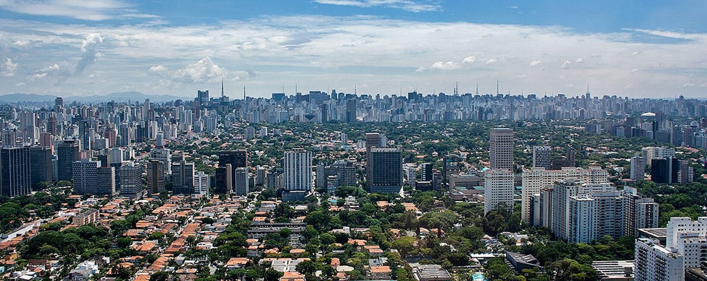

São Paulo, centro financeiro do Brasil, está entre as cidades mais populosas do mundo, com diversas instituições culturais e uma rica tradição arquitetônica. Há prédios simbólicos como a catedral neogótica, o Edifício Martinelli, um arranha-céu inaugurado em 1929, e o Edifício Copan, com suas linhas curvas projetadas pelo arquiteto modernista Oscar Niemeyer. A igreja em estilo colonial do Pátio do Colégio marca o local onde os padres jesuítas fundaram a cidade em 1554.
Fundada em 1554 por padres jesuítas, a cidade é mundialmente conhecida e exerce forte influência nacional e significativa importância internacional, seja do ponto de vista cultural, econômico ou político. Conta com importantes monumentos, parques e museus, como o Memorial da América Latina, o Museu da Língua Portuguesa, o Museu do Ipiranga, o MASP, o Parque Ibirapuera, o Jardim Botânico de São Paulo e a avenida Paulista, e eventos de grande repercussão, como a Bienal Internacional de Arte, o Grande Prêmio do Brasil de Fórmula 1, a São Paulo Fashion Week e a Parada do Orgulho LGBT. 